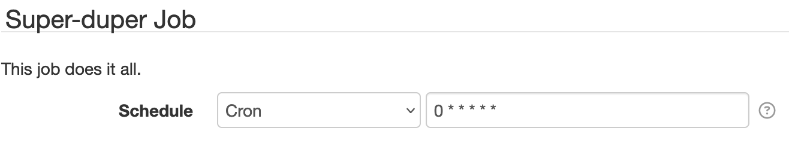

49. Job Scheduler¶
SolarNode provides a ManagedJobScheduler service that can automatically execute jobs exported by plugins that have user-defined schedules.
The Job Scheduler uses the Task Scheduler
The Job Scheduler service uses the Task Scheduler internally, which means the number of jobs that can execute simultaneously will be limited by its thread pool configuration.
49.1 Managed Jobs¶
Any plugin simply needs to register a ManagedJob service for the Job Scheduler to
automatically schedule and execute the job. The schedule is provided by the getSchedle()
method, which can return a cron expression or a plain number representing a millisecond period.
The net.solarnetwork.node.job.SimpleManagedJob class implements ManagedJob and can be used in
most situations. It delegates the actual work to a net.solarnetwork.node.job.JobService API,
discussed in the next section.
49.2 Job Service¶
The ManagedJob API delegates the actual task work to a JobService API. The executeJobService()
method will be invoked when the job executes.
49.3 Example Managed Job¶
Let's imagine you have a com.example.Job class that you would like to allow users to schedule. Your
class would implement the JobService interface, and then you would provide a localized messages
properties file and configure the service using OSGi Blueprint.
package com.example;
import java.util.Collections;
import java.util.List;
import net.solarnetwork.node.job.JobService;
import net.solarnetwork.node.service.support.BaseIdentifiable;
import net.solarnetwork.settings.SettingSpecifier;
/**
* My super-duper job.
*/
public class Job exetnds BaseIdentifiable implements JobService {
@Override
public String getSettingUid() {
return "com.example.job"; // (1)!
}
@Override
public List<SettingSpecifier> getSettingSpecifiers() {
return Collections.emptyList(); // (2)!
}
@Override
public void executeJobService() throws Exception {
// do great stuff here!
}
}
- The setting UID will be configured in the Blueprint XML as well.
- The
SimpleManagedJobclass we'll configure in Blueprint XML will automatically add aschedulesetting to configure the job schedule.
title = Super-duper Job
desc = This job does it all.
schedule.key = Schedule
schedule.desc = The schedule to execute the job at. \
Can be either a number representing a frequency in <b>milliseconds</b> \
or a <a href="{0}">cron expression</a>, for example <code>0 * * * * *</code>.
<service interface="net.solarnetwork.node.job.ManagedJob"><!-- (1)! -->
<service-properties>
<entry key="service.pid" value="com.example.job"/>
</service-properties>
<bean class="net.solarnetwork.node.job.SimpleManagedJob"><!-- (2)! -->
<argument>
<bean class="com.example.Job">
<property name="uid" value="com.example.job"/><!-- (3)! -->
<property name="messageSource">
<bean class="org.springframework.context.support.ResourceBundleMessageSource">
<property name="basenames" value="com.example.Job"/>
</bean>
</property>
</bean>
</argument>
<property name="schedule" value="0 * * * * *"/>
</bean>
</service>
- This registers a
ManagedJobservice with the SolarNode runtime. - The
SimpleManagedJobclass is a handyManagedJobimplementation. It adds aschedulesetting to any settings returned by theJobService. - The
uidvalue should match theservice.pidused earlier, which matches the value returned by thegetSettingUid()method in theJobclass.
When this plugin is deployed in SolarNode, the component will appear on the main Settings page and offer a configurable Schedule setting, like this:
